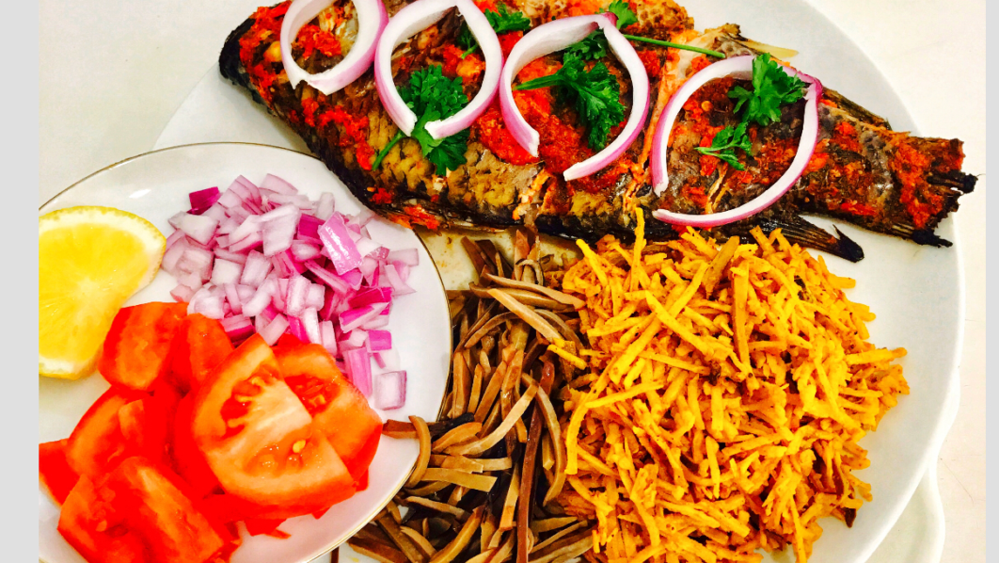

Africa Salad

List of INgredients for making Africa Salad
- ⇨ 2 cups Of Ugba (Ukpaka)
- ⇨ half cup of crayfish
- ⇨ 150ml of palm oil
- ⇨ Edible powdered potash(1 teaspoon)
- ⇨ salt and pepper to taste.
- ⇨ 3 garden eggs (optional)
- ⇨ Utazi leaves (optional)
- ⇨ Garden egg leaves (optional)
Steps to cooking the meal
- Blend your crayfish and also dissolve your potash in half a cup of water.
- Slice the onions, garden egg leaves. and Utazi leaves. Set aside, they will be used as the topping.
- Soak the dried Abacha in boiled water, allow three minutes and drain the water.
- Transfer into a sieve to allow water drain further.
- Heat the ugba in a small pot with 3 tbsp water (30ml) and allow to heat for 4 minutes
Filter the dissolved potash into a mortar or pot leaving out the residue.